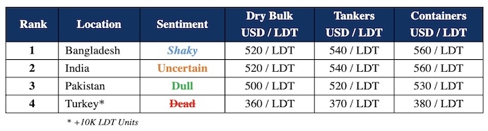

inWeekly Demolition Reports25/06/2024

Across the industry this week, the ongoing & disastrous state of affairs in both Bangladesh and Pakistanon opposite ends, coupled with the onset of the customarily slower summer / monsoon months has increasingly descended the Indian sub-continent ship recycling markets into a tighter squeeze over the last week or so, especially as India too shuffles through the impact of its recent election results and Turkey at the far end remains upended without any rescue, lying emaciated in wait for any signs of tonnage coming their way.
Meanwhile, as Bangladeshi Recyclers (and the rest of the industry) gradually absorb the news of the upcoming tax hike on FO & LO announced via their recent budget, key fundamentals haven’t been too ‘hot’ this week and the situation isn’t that dissimilar in Pakistan, India, or even Turkey, where at least one prime mover in key fundamentals affecting recycling vessel prices has declined again this week, as they have since early May. A natural byproduct of such a depreciation has been the increasingly marginal number of units arriving sub-continent port positions every week, with Pakistan now sitting at nil again. In fact, even though the industry is surprisingly starting to see decent prices emanating from both India (& even Bangladesh to an extent) on the right units; unfavored, poorly built, or questionably maintained tonnage is being largely ignored, which further highlights the dithering state of the global ship recycling industry that is ‘picky while poor’. Smack in the middle is the Indian stock market that too is getting back on its feet after suffering a brief collapse pursuant to the announcement of PM Modi’s BJP failing to generate a majority in the Parliament. Yet, those losses were soon recovered as the overall confidence in the market remains high, and not only do imminent infrastructure projects & economic stimuli measures remain in the pipeline, but India’s upcoming budget is also being announced in the third week of July, when the timeline of said projects should become clearer thereafter.
At the macro end, on the back of Israel’s defense cabinet announcing plans of officially taking on Hezbollah, which will see increasing attacks in the Red Sea Shipping Lanes given how only this week, Greek Controlled ‘TUTOR’ appears to have sunk after coming under attack from Houthi Rebels in the South and as a result, the situation will expectedly remain the same (if not worse) in the near future / coming months, before they get better again. The possibility of increasing excursions in the area could see merchant vessels completely bypassing the Red Sea (should all-out war breakout in the region) resulting in an even greater global inflation that will deliver even more of a disaster for citizens of the world. Time will tell!
For week 25 of 2024, GMS demo rankings / pricing for the week are as below.

📄 Download PDF: Ship-recycling-market-insight-Week-25-6-21-2024-Two-To-Tango.pdf
Source: GMS,Inc.https://www.gmsinc.net/gms_new/index.php/web